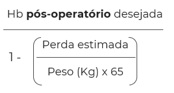
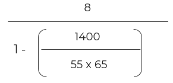

Sangramento estimado: 1400 ml
Hb pós programada para um mínimo de 8g/dl
| Reserva: | 4 unidades de CHM |
| 1 Pool de PQ | |
| 1000 ml de PFC | |
| 6 Unidades de Crioprecipitado |
Previsto DDAVP antes da cirurgia
Ácido Tranexâmico antes da cirurgia
Ferritina > 100ng/dl e IST > 20%
Hb de entrada 13,2 g/dl (após ferro venoso)
Peso da Paciente: 55kg
A partir das informações da paciente e da análise detalhada que foi realizada, preenchemos:
Hb pré-operatório (Mulher) = 
Hb pré-operatório (Mulher) = 
Hb pré-operatório (Mulher) = 13,1 g/dl